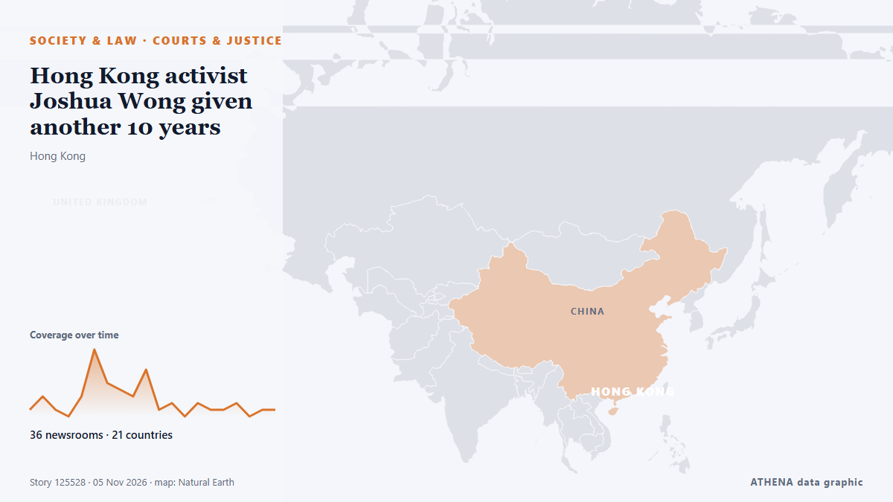

Hong Kong activist Joshua Wong given another 10 years

HONG KONG: Joshua Wong was one of the poster boys of Hong Kong’s pro-democracy movement, seen as a thorn in Beijing’s side as it seeks to stamp its authority on the territory. de New Straits Times
Relayé de façon indépendante par 41 médias dans 23 pays depuis le 4 nov. ; premier à l'annoncer : New Straits Times ; la couverture est à son pic. ATHENA juge le risque modéré (2.9/10), surtout en raison de la gravité des dommages décrits et de sa portée géographique et sectorielle. La confiance est de 87 % (élevée) : 41 médias indépendants le confirment, avec une fiabilité moyenne des sources de 74 %. Médias par pays : Malaisie (5), États-Unis (5), R.A.S. chinoise de Hong Kong (4). Couverture : du 4 nov. au 5 nov., 12 heures.
Pourquoi c'est important: Les changements juridiques et politiques modifient droits, obligations et services publics pour les personnes concernées.
Ce qui a changé : 7 nouveaux articles de 7 rédactions dans les 24 heures jusqu'au 6 nov..
Premier titre : Joshua Wong, Hong Kong pro-democracy poster boy facing longer prison stint
Les titres sont affichés en anglais, tels que publiés.
En un coup d'œil
Sélectionné, noté et rédigé par la méthodologie publiée d'ATHENA. Aucun rédacteur n'intervient sur un événement en particulier. Comment il est produit ›
| 04 Nov 22:22 UTC | 4 |
|---|---|
| 05 Nov 00:22 UTC | 1 |
| 05 Nov 02:22 UTC | 13 |
| 05 Nov 04:22 UTC | 9 |
| 05 Nov 06:22 UTC | 10 |
| 05 Nov 08:22 UTC | 3 |
| 05 Nov 10:22 UTC | 2 |
| 05 Nov 12:22 UTC | 2 |
| 05 Nov 14:22 UTC | 2 |
| 05 Nov 16:22 UTC | 2 |
| 05 Nov 18:22 UTC | 0 |
| 05 Nov 20:22 UTC | 0 |
| 05 Nov 22:22 UTC | 1 |
| 06 Nov 00:22 UTC | 0 |
| 06 Nov 02:22 UTC | 1 |
| 06 Nov 04:22 UTC | 1 |
| 06 Nov 06:22 UTC | 0 |
| 06 Nov 08:22 UTC | 0 |
| 06 Nov 10:22 UTC | 0 |
| 06 Nov 12:22 UTC | 1 |
| 06 Nov 14:22 UTC | 1 |
| 04 Nov 23:20 UTC | 0.0 |
|---|---|
| 05 Nov 01:10 UTC | 1.2 |
| 05 Nov 03:31 UTC | 1.9 |
| 05 Nov 05:19 UTC | 2.9 |
| 06 Nov 15:00 UTC | 2.9 |
Pourquoi ces chiffres
Importance
Risque
Confiance
La couverture : qui l'a annoncé, et quand
titre tel que publié · ouvre l'original- New Straits Times · MalaisieJoshua Wong, Hong Kong pro-democracy poster boy facing longer prison stint
- NDTV · IndeActivist Joshua Wong To Be Sentenced Today In Hong Kong Security Case
- ABC News (International) · États-UnisHong Kong pro-democracy activist faces sentencing in 2nd national security case
- Free Malaysia Today · MalaisieHong Kong activist Joshua Wong to be sentenced for collusion
- CNA (Channel NewsAsia) · SingapourHong Kong activist Joshua Wong sentenced to 10 more years for collusion
- South China Morning Post · R.A.S. chinoise de Hong KongJoshua Wong jailed for 10 years over bid to instigate sanctions on Beijing, Hong Kong
- New Straits Times · MalaisieHong Kong court sentences activist Joshua Wong to 10 years on national security charge
- The New York Times (World) · États-UnisJoshua Wong, Hong Kong Democracy Activist, Is Sentenced to 10 Years in Prison
- France 24 English · FranceHong Kong activist Joshua Wong gets 10 more years in jail for foreign collusion
- Free Malaysia Today · MalaisieHong Kong activist Joshua Wong sentenced to 10 more years
- ABC News Australia · AustralieHong Kong democracy activist Joshua Wong jailed for 10 more years
- CBC News · CanadaProminent Hong Kong activist Joshua Wong sentenced to 10 years in 2nd national security case
- BBC News · Royaume-UniJoshua Wong, face of Hong Kong's pro-democracy protests, jailed for 10 years
- The Guardian · Royaume-UniHong Kong pro-democracy activist Joshua Wong sentenced to 10 years in prison in national security case
- Al Jazeera English · QatarHong Kong activist Joshua Wong sentenced to ten years in jail
- ABC News (International) · États-UnisHong Kong's Joshua Wong is spending years of his adult life in prison
- RTHK English · R.A.S. chinoise de Hong KongJoshua Wong jailed 10 years for foreign collusion
- Anadolu Agency (English) · TurquieHong Kong activist sentenced to 10 years in prison for ‘foreign collision’
- Nikkei Asia · JaponHong Kong activist Joshua Wong sentenced to 10 years for foreign collusion
- Korea Herald · Corée du SudHong Kong activist Joshua Wong sentenced to 10 years in prison in 2nd national security case
- Ada Derana · Sri LankaHong Kong court sentences activist Joshua Wong to 10 years on national security charge
- Bangkok Post · ThaïlandeJoshua Wong sentenced to another 10 years in jail
- Human Rights Watch · États-UnisHong Kong: Joshua Wong Gets Nearly 10 More Years in Prison
- NPR · États-UnisHong Kong activist Joshua Wong is sentenced to 10 more years in prison
- DW English · AllemagneHong Kong democracy activist Joshua Wong sentenced to 10 more years
- TRT World · TurquieHong Kong court hands activist Joshua Wong 10-year prison sentence for 'foreign collusion'
- Nile Post · OugandaJoshua Wong, face of Hong Kong's pro-democracy protests, jailed for 10 years
- Euronews English · FranceHong Kong democracy activist Joshua Wong sentenced to 10 more years for collusion
- The Korea Times · Corée du SudHong Kong activist Joshua Wong gets 10 years in jail on national security charge
- The Irish News (Belfast) · Royaume-UniHong Kong activist Joshua Wong sentenced to 10 more years in prison
- Amnesty International · Royaume-UniHong Kong: Cruel Joshua Wong sentence a grim reminder of city’s disdain for human rights
- Al Jazeera English · QatarHong Kong democracy activist Joshua Wong sentenced to 10 years in jail
- BusinessWorld · PhilippinesHong Kong activist Joshua Wong gets 10 years in jail on national security charge
- RTHK English · R.A.S. chinoise de Hong KongWong undermined HK's prosperity and stability: CE
- Livemint · IndeWho is Joshua Wong? Why Hong Kong activist got 10 more years in jail and what is the case against him
- The Citizen (Tanzania) · TanzanieHong Kong activist Joshua Wong gets 10 years in jail on national security charge
- New Straits Times · MalaisieUS 'strongly condemns' Joshua Wong sentencing
- Mainichi (English) · JaponH.K. democracy activist Wong handed 10 yrs in 2nd security conviction
- CNA (Channel NewsAsia) · SingapourHong Kong's Joshua Wong: From teenage protest leader to a decade behind bars
- RTHK English · R.A.S. chinoise de Hong KongTang condemns external smearing over Wong sentence